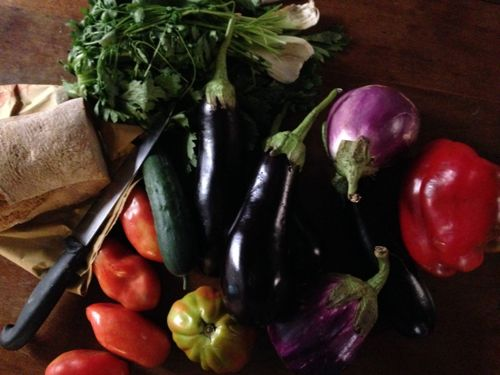

Bountiful Friday

Tableful of vegetables.
As often as I can I head over to my old neighborhood to buy my fruit and vegetables. It’s not a short walk through the mid-day summer sun, and I usually get way too many fruits and vegetables so that I’m loaded down for my walk back. But the walk there is mostly pleasant. I go through the small streets to the Colosseum, a portion of which now stands out white and clean against the blue sky. But from that point on, it’s tourists all the way. And on my return, the Bengali guys try to sell me tours despite my armloads of eggplants.
I go buy my vegetables below our old apartment partly because the farmers know me, but mostly because their produce is fresh. None of what they sell has been inside a refrigerator yet. When I touch cold tomatoes at other markets, a sense of righteousness comes over me: how dare you put tomatoes in the fridge before I have a chance to decide what to do with them! Their farm is in Velletri and I think they do most of their picking on Wednesday and Thursday so that on Friday, the day they are there and the day I usual go, everything is only two-days off the plant.
· · · · · · · · · · · · · · · · · · · ·